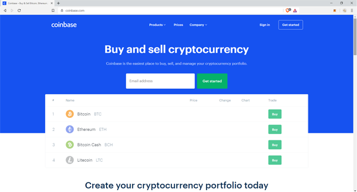
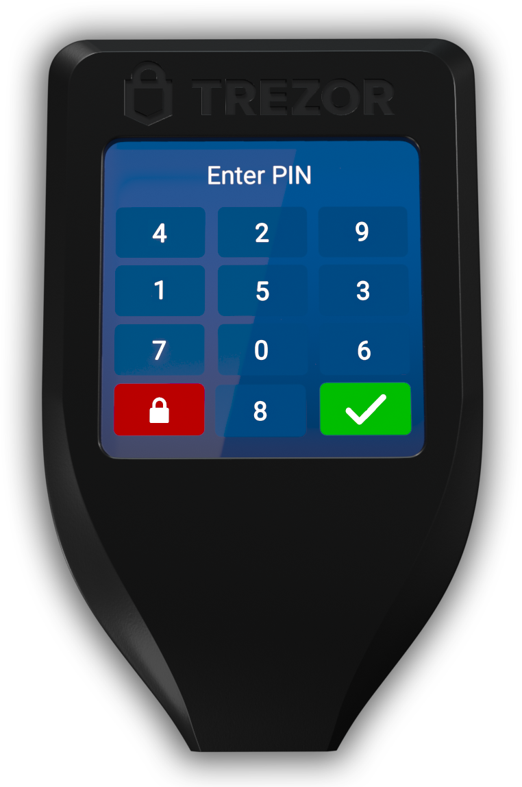
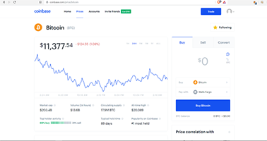
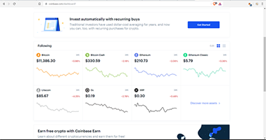

Home
Charts
Learn
Blog
Welcome Earthlings, so you have landed here because you're interested in buying Bitcoin, or eager for some crypto knowledge, maybe possibly buying an Altcoin. We are going to begin with Coinbase, one of the top leading exchanges in the United States. Let's start ya off on the right foot, and walk you through, what your first experiences will be like when logging into Coinbase, so you'll have all your info ready and know what to expect..  From the first step here is the front cover shot of their website the desktop version..
When you sign up and login you will first notice exchanges are a little stricter then like lets say Facebook or Twitter for example.. Majority of the exchanges, you will need to have a pic of your I.D, both front and back.. Well I should say if you are from the States, it's just how most of these companies roll, and when you're new it seems a little odd, at least it did for me.. Anyway, I had my passport ready for a second proof just incase.. Sometimes they ask for proof of residency as well, like a piece of mail.. More stuff for security purposes, you will have to setup a 2FA, which is 2 factor authentication, they try to keep the security pretty tight around there so your funds are safe as possible.
Most of the exchanges have had hacking problems in the past, and really, so has every bank.. anyway you look at it, the internet is a dangerous place.. My opinion, is to get your coins off the exchange after purchasing to get in that form of habbit, and moving them to your personal wallet..  A hardware wallet is the best if you can purchase one.. if not try atomicwallet.io for online decentalized storage, but you want to keep your crypto somewhere that you hodl you're own private keys they call them, which one way you will know if ya have them is if you had written down or been given a long password like 12-26 word pass phrase.... Or using a cold storage moving your funds there, basically if everyone just left their crypto on coinbase and someone hacked the site, it be would a lot easier for them to steal your money because everyone is sharing the same key basically.. Example, living in an apartment building, it would be like the manager having the keys to everyones apt on one key, and they let each person into there apartment. Instead of each individual having there own lock on their door, and each having a different key, the manager would just let everyone into there apartment. When you have your funds in your own wallet with private keys it's much safer.. 
Ok, now that we're past all that other fun stuff, and on to the Real fun, where we can start looking at crypto and seeing some charts happening.. Let's jump in!! For example purposes we are gonna start with Bitcoin and will work through some of the altcoins in a little bit.. This is an example of what the Bitcoins Chart and page looks like, you can see in the larger text it is showing the price of Bitcoin at the moment and in red text next to the price there is another number, that is how much it has gained or lost in the last 24hrs the volume.. So basically it list the market cap, volume (24hr), circulating supply, and all time high for highest price it has reached (ATH).. These are things that are good to look over before each buy or sell that you do..
This is a good time to mention that, if you're looking to just buy a little and sell a little then this is perfect, if your'e wanting to do more day trade or swing trade sorta style, they have another site called coinbase pro.. Coinbase Pro offers Limit Orders, Stop Orders, Market Orders, a little more of a professional trading site, or at least looks more like a traditional crypto trading platform that some are used to seeing.  If ya decide that you want to use that or give it a try, well you're in luck because it uses the same login info that you would use for the regular coinbase site.. The fees are actually a little cheaper as well on coinbase Pro.. So you say why doesnt everyone just use the Pro version then? Well some people like the simplicity of the regular coinbase site, it's real straight forward to be able use your credit or debit card and have crypto pretty instantly, with out a lot of flashy stuff going on.. With the charts moving and tickers going, it reminds me of a casino ha.. But I say pretty instantly because depending on your approval, it could take a second or a few days.. If you been with them a certain amount of time, then the transaction seems to go faster, I assume because you have built up credibility..
A cool thing I was just thinking about as am typing this, there has been some great changes over the years with coinbase, the amount of alt coins that has been added to the selection is wonderful.. if you look back to some of my older blogs you will notice they only were offering three coins then.. Bitcoin, Ethereum and Litecoin.. Now they have added XRP, 0x, Bitcoin Cash, Golem, USDC and they have some more in the works that should be available on coinbase shortly.. Another good point is, even tho the selection is not huge at least they're on the track of considering more options.. In reality sites like binance offer over a hundred different tokens and coins.. However with coinbase they are trying to only offer the for sure guaranteed companies that have a working product and are reputable..
I'm sure that there are a few people reading this that are thinking, ok, so now that I have some knowledge, I'm still not sure how to pick which crypto to buy or start trading.. but you know that you're Reallly wanting to get into the crypto market!! Awesome, Coinbase made the perfect solution, you can spend a certain amount, and they will give you a grab bag so to speak of a variety of coins or tokens.. They also offer, if you're wanting to invest say $20 every week or month into your account, of for example a fraction of a Bitcoin. "which a small fraction would be called a satoshi" they will automatically buy $20 every time ya set it to, so you can have a savings acount basically of crypto..
Well I think right there you should have enough to get ya started on coinbase, and you can now buy some Bitcoin! Check back for my next blog about how you can get FREE CRYPTO on coinbase... Called the coinbase Earn program..
August 11, 2019